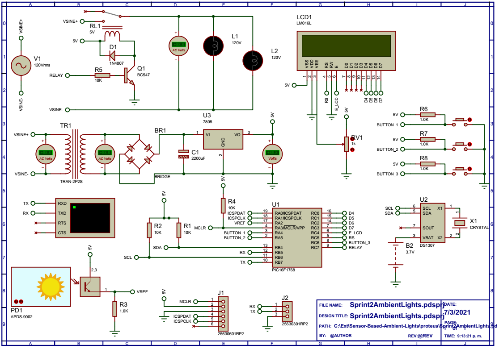
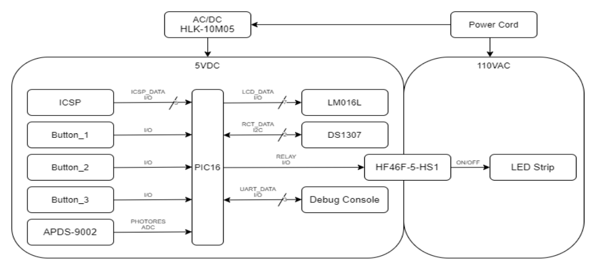
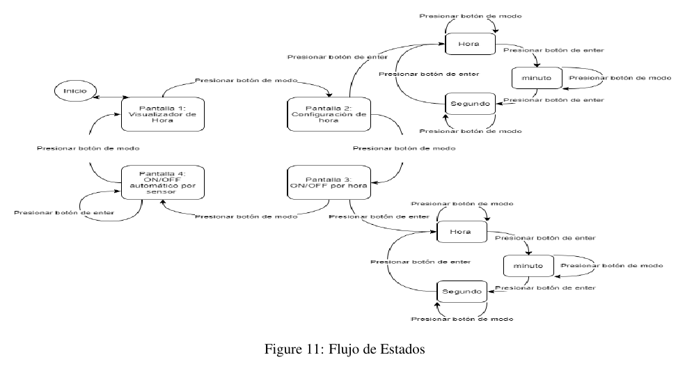
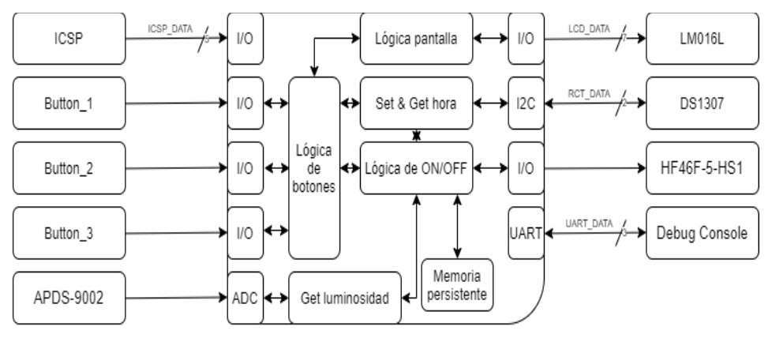
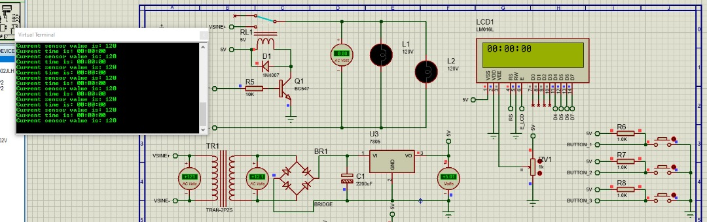

Sensor-Based Ambient Lights — the “HELA” Module
The HELA Module is a modular ambient‑light controller: one piece of hardware that can switch an ordinary mains 110 V / 220 V AC LED strip on and off manually, on a schedule, or automatically from the ambient light level. It was built for PG‑7232 Embedded Systems at the Universidad Simón Bolívar as a six‑person team project, with the firmware on a PIC16F1768 and the whole circuit validated in Proteus.
The brief was written as a product exercise: build to a target cost (electronics under US$7), run straight off mains, keep the operating mode through a power cut, and provide a simple user interface. The design that came out of it is deliberately conservative — a small non‑isolated 5 V supply for the logic and a relay to switch the mains strip.
Hardware

Hardware block diagram — the logic runs from a small 5 V supply; only the relay touches the mains.
| Block | Part | Notes |
|---|---|---|
| MCU | PIC16F1768 (20‑pin, 8‑bit) | I²C, 2× 10‑bit ADC, Flash for persistent state |
| Power | HLK‑10M05 AC/DC | Non‑isolated, 5 VDC @ 700 mA, 3×2 cm — powers the logic only |
| Light sensor | APDS‑9002 | Current output across a load resistor, read by the ADC |
| Real‑time clock | DS1307 module, battery‑backed | Keeps time through a mains outage |
| Relay | HF46F‑5‑HS1 (5 VDC coil, 5 A) | BC547 + base resistor drive; 1N4007 flyback diode |
| Display | LM016L 16×2 LCD | 4‑bit interface |
| Buttons | 3× momentary, pull‑up | Select / mode, Accept / enter, Cancel |
The complete circuit as simulated in Proteus.
Operation Modes
The LCD shows the current screen; the three buttons walk a small menu.
| Mode | What it does |
|---|---|
| Home | Shows the time and whether the light is forced on. Accept toggles a manual on/off override; Select cycles the menu. |
| Configure time | Set the clock hours / minutes / seconds. |
| Auto on/off (schedule) | Enter a start and end time; the light is on while the clock is inside that window. |
| Night light (sensor) | Enable the light sensor; the screen shows the live reading, and pressing Select captures it as the darkness threshold. Below that level, the light turns on. |

The menu state flow (from the project report) — the mode and enter buttons move between screens.
The relay logic is a simple priority chain: manual override → inside the scheduled window → ambient light below the captured threshold → otherwise off.
Firmware

Software block diagram — six subsystems: display, clock, sensor, buttons, persistent memory and the on/off logic that ties them together.
Hela.X/main.c is a single cooperative loop — read the light sensor (ADC), edge‑detect the three buttons, render the current menu screen, decide the relay state, and print the time and sensor value on a 9600 baud debug UART. The LCD is driven by a 4‑bit HD44780 library; the ADC, UART and pin setup come from MPLAB Code Configurator. The device runs from the 8 MHz internal oscillator.
| PIC pin | Signal |
|---|---|
| RA4 / RA5 / RC6 | Buttons — Select / Accept / Cancel |
| RA2 | Light sensor (ADC AN2) |
| RC0–RC3 | LCD data D4–D7 |
| RC4 / RC5 | LCD RS / E |
| RC7 | Relay drive |
| RB5 / RB7 | Debug UART RX / TX |
Simulation
The whole module — mains supply, regulator, PIC, LCD, RTC, sensor and relay — is simulated in Proteus using only stock library parts. A virtual terminal on the debug UART shows the time and the live light‑sensor reading.

Running in Proteus — the debug terminal streams the time and sensor value. There is also a demo video of the last firmware version.
Notes
- The committed firmware implements the menu, the light sensor, the schedule comparison and the relay control. The DS1307 is on the board and in the schematic, but this build does not yet read it over I²C (no I²C module is generated and there is no timekeeping interrupt) — the clock is set and held through the Configure time screen. Wiring the RTC and writing the selected mode to Flash are the open items.
- From the report's BOM analysis the electronics come to about $7 in one‑off quantities and the full production cost (with assembly and lamp materials) to about $31 against a $70 retail target — inside the 50% goal.
- The repository has no
LICENSEfile yet. - Team: Carlos Sanoja, Jesús Guillen, Leonardo Ward, Mauricio Marcano, Oscar Moreno and Vincenzo D’Argento.
Posted In:
Embedded Software